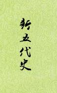

| 历史史籍 > |
| 新五代史 |
| 欧阳修 编撰 |
|
《新五代史》，原名《五代史记》，是唐代设馆修史以后唯一的私修正史。欧阳修大约于景祐三年（1036）至皇祐五年（1053）的十八年间编成此书。 全书74卷，包括本纪12卷、列传45卷、考3卷、世家及世家年谱11卷、四夷附录4卷。其中列传最有特色。它采用类传的形式，设立《家人传》、《臣传》、《死节传》、《杂传》等名目。内寓特定涵义，用以贯彻作者的“褒贬”义例。 欧阳修编撰此书的目的，大约主要是以史立论，最著名的要算《伶官传序》，读来酣畅淋漓；但另有一篇《冯道传序》，其中说王凝妻李氏被人牵了下手臂，“即引斧自断其臂”，读来却令人背脊发冷。宋儒理学之可怕，可见一斑。 [2019/5/12，三整理] |
 |